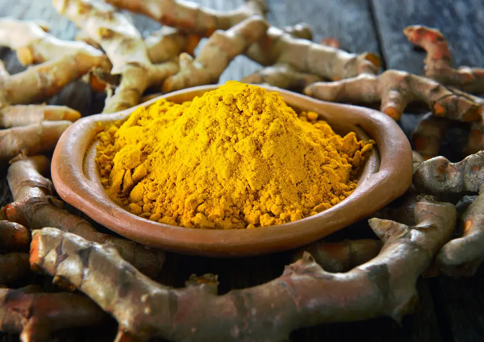

Ceylon Turmeric
High-Curcumin Organic Turmeric Powder
Our Ceylon Turmeric is a golden powerhouse grown in Sri Lanka’s fertile Monaragala region. Carefully sun-dried and finely ground, it boasts high curcumin content and vibrant color — perfect for immunity, inflammation support, and flavorful cooking.
Key Product Highlights
- Origin: Monaragala, Sri Lanka
- Curcumin: >5%
- Processing: Sun-dried, microbe-free milling
- Uses: Golden milk, spice blends, Ayurvedic capsules, curries

Product Specifications
| Scientific Name | Curcuma longa |
|---|---|
| Form | Fine Powder |
| Color | Bright Orange-Gold |
| Curcumin | >5% |
| Moisture | <8% |
| Packaging | 100g | 250g | 500g |
| Shelf Life | 18 months |
How to Use Ceylon Turmeric
Daily Wellness
Add to smoothies, warm milk (golden milk), or lemon water for a daily anti-inflammatory boost.
Cooking
Use in curries, rice, and marinades for bold color and flavor.
Skincare
Mix with honey or yogurt for DIY face masks targeting acne and skin glow.
Bring the power of pure Ceylon turmeric into your daily routine.
Frequently Asked Questions
Is your turmeric high in curcumin?
Yes, our turmeric consistently tests above 5% curcumin — among the highest available.
Can I use this in capsules?
Yes. It’s finely ground and suitable for encapsulation or DIY supplements.
Is it irradiated?
No. It is sun-dried and microbe-tested without irradiation or preservatives.
Do you offer private label?
Yes, we support custom packaging and white-label partnerships.